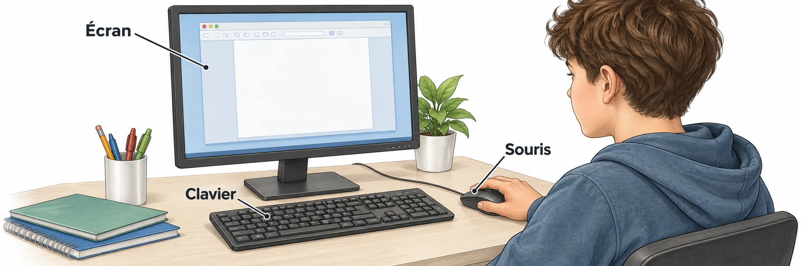

OBSERVER · EXPÉRIMENTER · EXPLIQUER
Le dossier numérique du club
Essaie une organisation de fichiers avant de la dessiner. Le déplacement reste une simulation.

✎ Garde ta feuille à côté de toi.Prévois sur papier → manipule → observe → rédige sur papier.
Des observations pour expliquer
- Q1–Q2 : classe les contenus, dessine les dossiers et écris un chemin.
- Q3–Q4 : réalise le tableau dans un tableur et explique les droits de partage sur papier.
Appuie ton explication sur une valeur, un changement observé ou une comparaison. Distingue ce que montre le modèle et ce qui reste à vérifier.